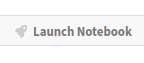

106. Troubleshooting#
This page is for readers experiencing errors when running the code from the lectures.
106.1. Fixing Your Local Environment#
The basic assumption of the lectures is that code in a lecture should execute whenever
it is executed in a Jupyter notebook and
the notebook is running on a machine with the latest version of Anaconda Python.
You have installed Anaconda, haven’t you, following the instructions in this lecture?
Assuming that you have, the most common source of problems for our readers is that their Anaconda distribution is not up to date.
Here’s a useful article on how to update Anaconda.
Another option is to simply remove Anaconda and reinstall.
You also need to keep the external code libraries, such as QuantEcon.py up to date.
For this task you can either
use
pip install --upgrade quanteconon the command line, orexecute
!pip install --upgrade quanteconwithin a Jupyter notebook.
If your local environment is still not working you can do two things.
First, you can use a remote machine instead, by clicking on the Launch Notebook icon available for each lecture

Second, you can report an issue, so we can try to fix your local set up.
We like getting feedback on the lectures so please don’t hesitate to get in touch.
106.2. Reporting an Issue#
One way to give feedback is to raise an issue through our issue tracker.
Please be as specific as possible. Tell us where the problem is and as much detail about your local set up as you can provide.
Finally, you can provide direct feedback to contact@quantecon.org